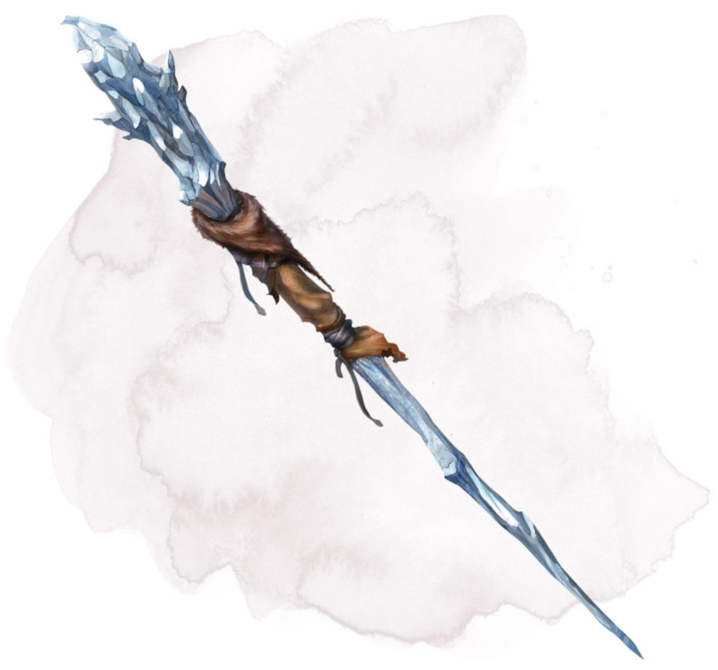

Bâton de givre
[ Staff of Frost ]
Bâton, très rare (nécessite un lien avec un druide, un ensorceleur, un magicien ou un occultiste)
Vous obtenez la résistance aux dégâts de froid tant que vous tenez ce bâton.
Le bâton possède 10 charges. Tant que vous le tenez, vous pouvez utiliser une action pour en dépenser 1 ou plusieurs charges afin de lancer l'un des sorts suivants tout en utilisant votre propre DD des sorts : cône de froid (5 charges), nappe de brouillard (1 charge), tempête de grêle (4 charges) ou mur de glace (4 charges).
Le bâton récupère 1d6 + 4 charges dépensées chaque jour à l'aube. Si vous dépensez la dernière charge, lancez un d20. Sur un résultat de 1, le bâton se change en eau et est détruit.
Le bâton possède 10 charges. Tant que vous le tenez, vous pouvez utiliser une action pour en dépenser 1 ou plusieurs charges afin de lancer l'un des sorts suivants tout en utilisant votre propre DD des sorts : cône de froid (5 charges), nappe de brouillard (1 charge), tempête de grêle (4 charges) ou mur de glace (4 charges).
Le bâton récupère 1d6 + 4 charges dépensées chaque jour à l'aube. Si vous dépensez la dernière charge, lancez un d20. Sur un résultat de 1, le bâton se change en eau et est détruit.
Dungeon Master´s Guide (SRD)
